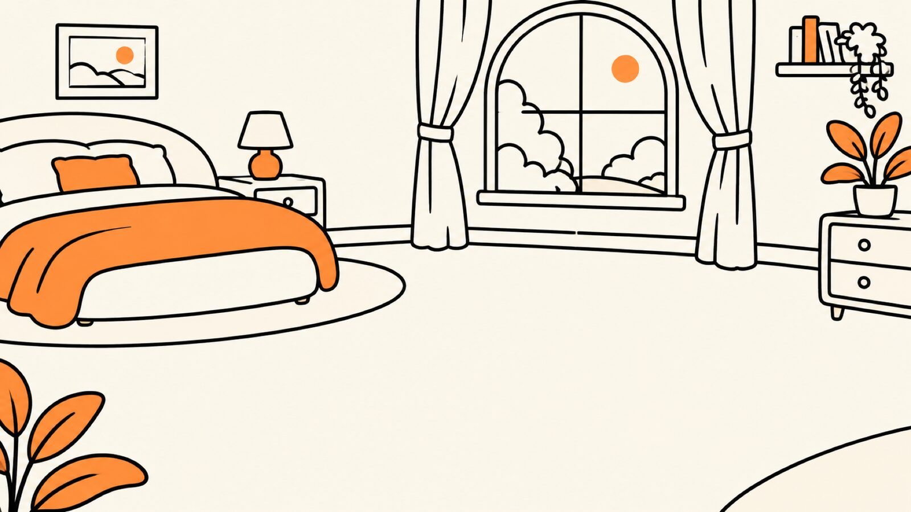

A day with Doddy, from 08:45 to far too late
Life's complicated. Doddy isn't. Usually.
From forgotten plans to awkward messages, meet the little guy who helps you figure things out.
Scripted demonstrations, each labelled with what's built today. Doddy is an AI, not a person.
Jump to a moment
08:45
You're late. Again.
The alarm went off. You went back to sleep. The meeting didn't.
- Reads today's calendar out loud, with the bit you'd rather not hear first.
- Drafts a two-line "running late" message. You tap send, Doddy never does.
- Moves the next thing back twenty minutes, after you tap Add.
Calendar and messages · in testing

Doddy, what's happening today?
Today
Team meeting09:00 · started
Dentist12:30
Call Mum19:00
Well, your meeting started 15 minutes ago. Excellent start.